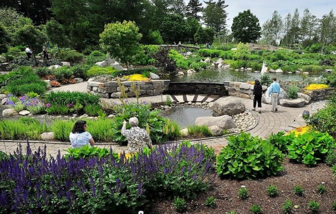

Akshardham Temple
Among the temples in Delhi, Akshardham Temple or Swaminarayan Akshardham Complex is amazingly famous as it is known to be a spiritual and cultural campus in Delhi and also one of the famous places to visit in east Delhi. This complex showcases the traditional Hindu and Indian culture, spirituality and architecture. Tourists from all over the world come to Delhi will visit the temple to understand the spiritual facts of India. The temple was opened in 2005 by Dr. APJ Abdul Kalam. It is one of the most religious places to visit in Delhi with family.
Sitting on the banks of the Yamuna River in eastern Delhi, the complex possesses the temple at the center and the construction was according to the Vastu Shastra and Pancharatra Shastra. There are an Abhishek Mandap, Sahaj Anand Water Show, a theme based garden, and three exhibitions like Sahajanand Darshan, Neelkanth Darshan and Sanskruthi Darshan which is a cultural boat ride.
Among the attractions inside the complex, Akshardham Mandir is quite famous and more charming. The architectural measures prove that the temple is 141 foot high and 316 foot wide. The walls of it are explicitly carved with the images of flora, fauna, musicians, deities etc. It has an intricate architectural style of Maharishi Vastu concepts and for the construction of the temple, the pick sandstone from Rajasthan and Carrara marbles from Italy was used. It accommodates 234 adorned pillars, nine domes, 20000 murtis of sadhus, devotees, and acharyas.
Akshardham temple entry timing:Entry: 09:30 am to 06:30 pm
Exhibition: 10:30 am to 06:00 pm and the tickets for the exhibition will be available from 10:00 am to 05:00 pm.
Musical fountain: 07:45 pm
The temple will be closed on Mondays.
Akshardham temple entry fee:Complex entry is completely free.
Exhibition rates are Rs. 170 for adults, Rs.125 for senior citizens, Rs.100 for children between 4 and 11 years.
Musical fountain: Rs. 80 for adults, Rs.80 for senior citizens, Rs.50 for children between 4 and 11 years
NH 24, Akshardham Setu, New Delhi, 110092.
Insider Tips:Delhi Monuments
1. India Gate

2. Rashtrapati Bhavan

3. Red Fort

4. Qutub Minar

Delhi Temples
1.Bahai (Lotus) Temple

Delhi Parks & Museums
1. Garden of Five Senses
2. National Museum

Delhi Markets, Food & Entertainment Zones
1. Connaught Place

2. Dilli Haat

3. Chandni Chowk

4. Hauz Khas